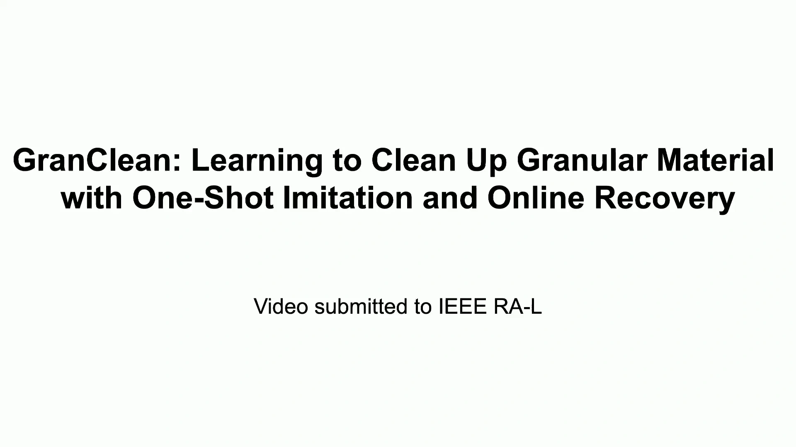
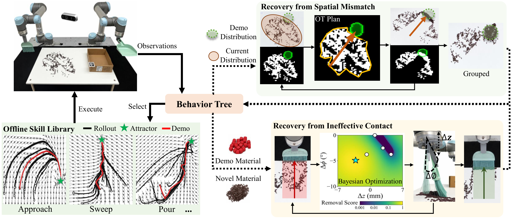
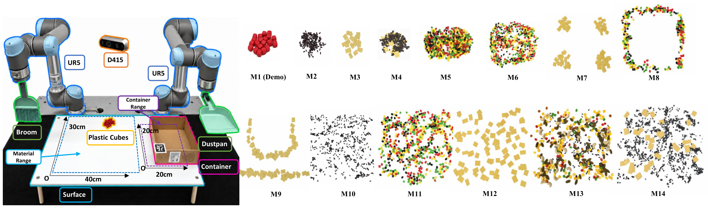

OT regrouping ablation
| Method | M5 | M6 | M8 | M11 |
|---|---|---|---|---|
| With OT | 97.1 ± 2.9 | 100.0 ± 0.0 | 99.1 ± 1.6 | 98.8 ± 0.4 |
| Without OT | 62.7 ± 8.1 | 19.8 ± 3.2 | 12.4 ± 2.8 | 27.8 ± 2.2 |
OT maintains 97.1–100.0% cleanup across four layouts.
Anonymous submission

Robotic cleanup of granular material is a multi-step, long-horizon task involving complex physical interactions. Imitation learning offers a promising approach to acquiring cleanup skills from demonstrations. However, unseen spatial distributions and unfamiliar material properties introduce out-of-distribution (OOD) conditions under which learned policies can fail. Collecting demonstrations to cover these variations is costly. In this paper, we propose a hierarchical one-shot imitation learning framework that enables a complete granular material cleanup workflow under OOD conditions without additional demonstrations or policy retraining. The framework learns reusable motion skills from a single demonstration and uses a behavior tree to coordinate their execution with two complementary recovery mechanisms. Specifically, we use optimal transport to handle changes in spatial distribution by regrouping material toward the demonstrated configuration, and Bayesian optimization to accommodate ineffective contact by adjusting skill motion parameters using visual feedback alone. Real-world experiments with two UR5 manipulators in six novel scenarios achieve an average cleanup rate of 93.2%, demonstrating the effectiveness of our framework.
Method

GranClean learns reusable SE(3) LPV-DS motion skills from a single cleanup demonstration. A behavior tree coordinates closed-loop skill execution, shown by solid arrows, while dashed arrows connect the two online recovery mechanisms. Optimal transport (OT) regroups scattered material toward the demonstrated pile region. Bayesian optimization (BO) adjusts sweep height and tool tilt when contact with novel materials is ineffective. Together, these mechanisms support skill reuse without additional demonstrations or policy retraining.
Real-world evaluation

Highest mean cleanup rate in all six scenarios.
| Method | M7 | M9 | M10 | M12 | M13 | M14 |
|---|---|---|---|---|---|---|
| Heuristic | 84.3 ± 4.8 | 93.7 ± 3.0 | 90.3 ± 3.7 | 85.5 ± 5.6 | 82.4 ± 2.0 | 71.8 ± 5.3 |
| TT | 32.9 ± 11.2 | 11.0 ± 4.5 | 21.8 ± 3.3 | 19.2 ± 12.6 | 38.5 ± 5.8 | 15.5 ± 4.9 |
| TT w/ Recovery | 80.4 ± 3.6 | 85.9 ± 3.1 | 95.8 ± 1.9 | 86.7 ± 2.4 | 77.6 ± 5.3 | 76.3 ± 5.3 |
| GranClean (ours) | 93.3 ± 3.0 | 98.0 ± 1.4 | 97.8 ± 1.1 | 93.3 ± 5.4 | 87.1 ± 4.0 | 89.5 ± 4.3 |
| Method | M7 | M9 | M10 | M12 | M13 | M14 |
|---|---|---|---|---|---|---|
| Heuristic | 46.0 ± 4.4 | 87.0 ± 4.0 | 101.3 ± 6.1 | 92.0 ± 3.6 | 79.3 ± 7.6 | 106.0 ± 10.4 |
| TT | 120.0 ± 0.0 | 120.0 ± 0.0 | 120.0 ± 0.0 | 120.0 ± 0.0 | 120.0 ± 0.0 | 120.0 ± 0.0 |
| TT w/ Recovery | 33.3 ± 3.1 | 40.3 ± 1.5 | 66.7 ± 5.9 | 57.0 ± 8.2 | 57.0 ± 7.9 | 84.3 ± 5.7 |
| GranClean (ours) | 35.7 ± 4.2 | 37.7 ± 2.5 | 64.0 ± 6.0 | 54.0 ± 7.0 | 65.0 ± 5.3 | 79.3 ± 4.7 |
Mean ± SD
| Method | M5 | M6 | M8 | M11 |
|---|---|---|---|---|
| With OT | 97.1 ± 2.9 | 100.0 ± 0.0 | 99.1 ± 1.6 | 98.8 ± 0.4 |
| Without OT | 62.7 ± 8.1 | 19.8 ± 3.2 | 12.4 ± 2.8 | 27.8 ± 2.2 |
OT maintains 97.1–100.0% cleanup across four layouts.
| Method | M1 | M2 | M3 | M4 |
|---|---|---|---|---|
| With BO | 100.0 ± 0.0 | 97.3 ± 2.1 | 93.3 ± 8.3 | 98.0 ± 1.0 |
| Without BO | 100.0 ± 0.0 | 18.3 ± 2.5 | 22.7 ± 15.1 | 29.0 ± 7.0 |
BO adds 69.0–79.0 percentage points on novel materials.
Takeaways